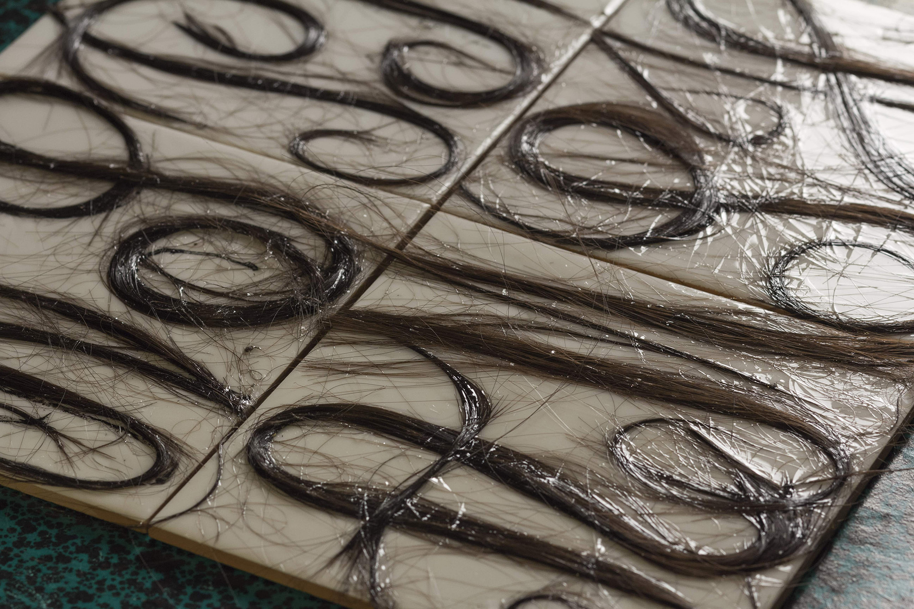

THE BOX—the box fulfils four missions: to protect the cultural object from deterioration, to protect the object from terrorist groups, to prepare the object for emergency transportation and to provide the public online inspection of the object, in case the physical one is not allowed.
1.
2.

3.

4.
5.
6.

7.
8.
Our 3D Heritage
The project “Our 3D Heritage” speculates on the movement of 3D-scanning in the field of cultural preservation. 3D-scanning has been around for years and widely used by archeologists to observe and reconstruct historical artifacts. However, this technology has remained inaccessible to non-specialists and the technically-incompetent public until the introduction of smart phones, tablets and affordable consumer-grade 3d-scanners. Next to this, it also gained more public interests due to recent terrorist attacks on cultural heritages, especially in the case of Syrian monuments.
This project wished not to focus on the technical aspect of 3D-scanning but to pose some questions on the value of the culture objects being scanned. The questions are consolidated through 4 clusters/items: the preservationist pillow, the museum safe box, the book of policies and the repatriation maps. Please browse through the images for further explanations.
The cut edge of the hair in the material medium of remembrance marks the act of remembrance as the very moment when its natural status was transformed into a cultural status, and when the present presence of the body is anticipated as a future absence.
—Christine Holm. 'Sentimental Cuts: Eighteenth-Century Mourning Jewelry with Hair.' Eighteenth-Century Studies. Volume 38, Number 1. Fall 2004. 140.
1.
2.

3.

4.

5.
6.

7.
8.

9.

The New Grief: An Online Memorial
The New Grief is an app facilitating a new system of grief, where people will have already shifted from the materialistic approach (funerals, totems, wills, memoirs, costumes, etc.) to the non-materialistic approach of commemorating death. The project aims to change the conservative view of what can be called the “after-life responsibilities”, which, in some countries, has put members of a family in a persisting system of guilt. By having a person’s belongings and memories online, the family members no longer have to give or burn material provision to the dead relative in order to sustain his/her existence in the underworld (a practice commonly seen in Vietnam). This will not only save money and time, it will also help to reduce pollution and more importantly to introduce a new mentality towards death for the new generations.
The app recognizes hair pattern as a code to enter the funeral space. Hair is the only transitional artifact left between the materialistic and non-materialistic system of grief.
1. View of the installation 'I’m Frightened, Angry, Disappointed, Hopeful, Compassion And Proud About The Economy' ready for the opening, with Scene Peng, 2019.
1.

2.
3.

4.
5.

I’m Frightened, Angry, Disappointed, Hopeful, Compassion And Proud About The Economy
The aim of this project was to bring emotions into machine vision.
“I’m Frightened, Angry, Disappointed, Hopeful, Compassion And Proud About The Economy” is a chess game installation, with two laptops on the side connected with speakers, and two chairs for the players. The laptops’ webcams track the movement of the hands as they shuffle around, think, hesitate and decide. The movements are then translated through a previously trained A.I model, who interprets and outputs synthesized sounds to the speakers. The four players together, machine and human, compose a non-stop ambient piece that reflects the atmosphere of the game, be it "Frightening, Wrathful, Disappointing, Hopeful, Compassing Or Full of Pride”.
In collaboration with Scene Peng for the exhibition The Giant Floating Eyeball, under the supervision of Matthias Kreutzer, Maarten Cornel and James Grave.